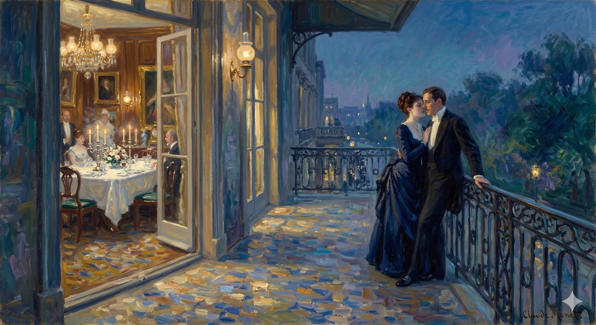

After dinner at Lancaster Gate, the gentlemen join the ladies upstairs, where the group enjoys coffee and music. While Aunt Maud holds court on the balcony, Merton Densher and Kate Croy find a moment to sit together on a sofa, a move Kate frames as proof of their "good conscience".During this time and the subsequent departure of the guests, the following actions occur:Kate’s Revelation Regarding Milly: Kate informs Densher that Milly is seriously ill, describing her as "seriously menaced" by a physical breakdown. She reveals that Milly is seeing the eminent physician Sir Luke Strett.The Proposition of Consolation: Kate explicitly tells Densher that she wants him to "console" Milly for the life she might lose. She characterizes Densher as her most "precious" asset, which she is willing to "use" to make things pleasant for her friend.Introduction to Lord Mark: A new guest, Lord Mark, arrives and is introduced to Densher. Kate later explains to Densher that Lord Mark is Aunt Maud’s preferred suitor for her, though she claims neither she nor Milly truly trusts or cares for him.Densher's Pledge: Overwhelmed by Kate's complexity and his own devotion, Densher begs her not to fail him, stating it would "kill" him. Kate assures him that she has already provided Milly with "reasons" that explain their past connection without revealing their current engagement.Aunt Maud’s Ultimatum: As Densher prepares to leave, Mrs. Lowder detains him to urge that he not lose "the occasion of [his] life" by neglecting Milly. She emphasizes Milly’s "huge" fortune and offers to "smooth [his] path" toward her.The "Proper Lie": Aunt Maud reveals she has told a "proper lie" to start Densher's progress with Milly. Walking home, Densher realizes the nature of this lie: Aunt Maud has guaranteed to Milly, via Mrs. Stringham, that Kate does not care for him and that his attachment to Kate is unrequited.
The younger of the other men, it afterwards appeared, was most in his element at the piano; so that they had coffee and comic songs upstairs—the gentlemen, temporarily relinquished, submitting easily in this interest to Mrs. Lowder's parting injunction not to sit too tight. Our especial young man sat tighter when restored to the drawing-room; he made it out perfectly with Kate that they might, off and on, foregather without offence. He had perhaps stronger needs in this general respect than she; but she had better names for the scant risks to which she consented. It was the blessing of a big house that intervals were large and, of an August night, that windows were open; whereby, at a given moment, on the wide balcony, with the songs sufficiently sung, Aunt Maud could hold her little court more freshly. Densher and Kate, during these moments, occupied side by side a small sofa—a luxury formulated by the latter as the proof, under criticism, of their remarkably good conscience. "To seem not to know each other—once you're here—would be," the girl said, "to overdo it"; and she arranged it charmingly that they must have some passage to put Aunt Maud off the scent. She would be wondering otherwise what in the world they found their account in. For Densher, none the less, the profit of snatched moments, snatched contacts, was partial and poor; there were in particular at present more things in his mind than he could bring out while watching the windows. It was true, on the other hand, that she suddenly met most of them—and more than he could see on the spot—by coming out for him with a reference to Milly that was not in the key of those made at dinner. "She's not a bit right, you know. I mean in health. Just see her to-night. I mean it looks grave. For you she would have come, you know, if it had been at all possible."
The younger of the other men, it turned out later, was best at the piano. So they had coffee and funny songs upstairs—the gentlemen, temporarily left behind, easily complying with Mrs. Lowder's departing request not to stay too close. Our particular young man sat closer when they returned to the drawing-room; he and Kate understood perfectly that they could meet up now and then without causing any trouble. He probably needed this more than she did, but she had better justifications for the small risks she was taking. The benefit of a large house was that there was plenty of space, and on an August night, the windows were open; therefore, at a certain point, on the wide balcony, after the songs were finished, Aunt Maud could hold her little court with a fresher atmosphere. Densher and Kate, during these moments, sat side by side on a small sofa—a convenience that Kate described, when questioned, as proof of their remarkably clear consciences. "To pretend not to know each other—once you're here—would be," the girl said, "to overdo it"; and she cleverly arranged things so they had some excuse to keep Aunt Maud from getting suspicious. Otherwise, she would wonder what on earth they found interesting in each other. For Densher, however, the advantage of these brief moments, these stolen interactions, was incomplete and unsatisfactory; he was preoccupied with more than he could express while watching the windows. It was true, on the other hand, that she suddenly understood most of his thoughts—and more than he could immediately realize—by mentioning Milly in a way that didn't match their dinner conversations. "She's not well, you know. I mean her health. Just look at her tonight. I think it looks serious. She would have come for you, you know, if it had been at all possible."
He took this in such patience as he could muster. "What in the world's the matter with her?"
He handled the situation as calmly as he could.
"What's wrong with her?"
But Kate continued without saying. "Unless indeed your being here has been just a reason for her funking it."
But Kate kept going, not stopping. "Unless, of course, you being here was just a way for her to chicken out."
"What in the world's the matter with her?" Densher asked again.
"What's wrong with her?" Densher asked again.
"Why just what I've told you—that she likes you so much."
Because, like I said, she really likes you.
"Then why should she deny herself the joy of meeting me?"
So why wouldn't she want to meet me?
Kate cast about—it would take so long to explain. "And perhaps it's true that she is bad. She easily may be."
Kate hesitated - it would take too long to explain.
"And maybe it's true that she's a bad person. It's certainly possible."
"Quite easily, I should say, judging by Mrs. Stringham, who's visibly preoccupied and worried."
I'd say it's pretty obvious, just look at Mrs. Stringham. She's clearly distracted and worried.
"Visibly enough. Yet it mayn't," said Kate, "be only for that."
Clearly. But it might not be only for that reason," said Kate.
"For what then?"
What's the point?
But this question too, on thinking, she neglected. "Why, if it's anything real, doesn't that poor lady go home? She'd be anxious, and she has done all she need to be civil."
But she dismissed that question too, after thinking about it.
"Why doesn't that poor woman just go home if there's really something wrong? She must be worried, and she's been polite enough."
"I think," Densher remarked, "she has been quite beautifully civil."
"I think," Densher said, "she's been really polite."
It made Kate, he fancied, look at him the least bit harder; but she was already, in a manner, explaining. "Her preoccupation is probably on two different heads. One of them would make her hurry back, but the other makes her stay. She's commissioned to tell Milly all about you."
He thought it made Kate give him a slightly closer look, but she was already starting to explain. "She's probably focused on two things. One would make her want to come back quickly, but the other keeps her here. She's been asked to tell Milly everything about you."
"Well then," said the young man between a laugh and a sigh, "I'm glad I felt, downstairs, a kind of 'drawing' to her. Wasn't I rather decent to her?"
"Well," the young man said with a chuckle and a sigh, "I'm happy I felt drawn to her earlier. Don't you think I was pretty nice to her?"
"Awfully nice. You've instincts, you fiend. It's all," Kate declared, "as it should be."
"That's really good. You're perceptive, you devil. Everything," Kate announced, "is perfect."
"Except perhaps," he after a moment cynically suggested, "that she isn't getting much good of me now. Will she report to Milly on this?" And then as Kate seemed to wonder what "this" might be: "On our present disregard for appearances."
"Unless," he said after a cynical pause, "maybe she's not getting much benefit from me lately. Do you think she'll tell Milly about that?" Then, when Kate looked confused about what "that" referred to, he added, "About how we're currently ignoring how things look to everyone else."
"Ah leave appearances to me!" She spoke in her high way. "I'll make them all right. Aunt Maud, moreover," she added, "has her so engaged that she won't notice." Densher felt, with this, that his companion had indeed perceptive flights he couldn't hope to match—had for instance another when she still subjoined: "And Mrs. Stringham's appearing to respond just in order to make that impression."
"Don't worry about how things look!" she said, in that elevated tone of hers. "I'll handle it. Besides, Aunt Maud," she added, "is so caught up in her own things that she won't pay attention." Densher realized then that she was incredibly perceptive in ways he couldn't be—especially when she continued, "And Mrs. Stringham is just pretending to agree, to create a certain impression."
"Well," Densher dropped with some humour, "life's very interesting! I hope it's really as much so for you as you make it for others; I mean judging by what you make it for me. You seem to me to represent it as thrilling for ces dames, and in a different way for each: Aunt Maud, Susan Shepherd, Milly. But what is," he wound up, "the matter? Do you mean she's as ill as she looks?"
"Well," Densher said with a touch of amusement, "life's pretty fascinating! I hope it's as exciting for you as you make it out to be for other people; I mean, judging by what you've made it for me. You seem to portray it as thrilling for these women, and in a different way for each one: Aunt Maud, Susan Shepherd, Milly. But," he concluded, "what's wrong? Do you mean she's actually as sick as she appears?"
Kate's face struck him as replying at first that his derisive speech deserved no satisfaction; then she appeared to yield to a need of her own—the need to make the point that "as ill as she looked" was what Milly scarce could be. If she had been as ill as she looked she could scarce be a question with them, for her end would in that case be near. She believed herself nevertheless—and Kate couldn't help believing her too—seriously menaced. There was always the fact that they had been on the point of leaving town, the two ladies, and had suddenly been pulled up. "We bade them good-bye—or all but—Aunt Maud and I, the night before Milly, popping so very oddly into the National Gallery for a farewell look, found you and me together. They were then to get off a day or two later. But they've not got off—they're not getting off. When I see them—and I saw them this morning—they have showy reasons. They do mean to go, but they've postponed it." With which the girl brought out: "They've postponed it for you." He protested so far as a man might without fatuity, since a protest was itself credulous; but Kate, as ever, understood herself. "You've made Milly change her mind. She wants not to miss you—though she wants also not to show she wants you; which is why, as I hinted a moment ago, she may consciously have hung back to-night. She doesn't know when she may see you again—she doesn't know she ever may. She doesn't see the future. It has opened out before her in these last weeks as a dark confused thing."
At first, Kate's expression seemed to say that his mocking words weren't worth a response. Then, she seemed to give in to something she felt she needed to say – that Milly's condition wasn't *as* bad as she looked. If Milly were as ill as she appeared, they wouldn’t even be having this conversation, because she'd be near death. Yet, Milly believed, and Kate couldn't help but believe too, that she was seriously threatened. There was also the fact that they'd almost left town, the two women, and then suddenly stopped. "We said goodbye – or almost – to Aunt Maud and me the night before Milly, rather strangely, went to the National Gallery for a final look, where she found you and me together. They were supposed to leave a day or two later. But they haven't left – and they aren't going to. When I see them – and I saw them this morning – they have elaborate excuses. They *intend* to go, but they've postponed it." Then the girl added, "They've postponed it because of you."
He protested as much as a man could without sounding foolish, because any protest sounded like he believed her. But Kate, as usual, understood the situation. "You’ve made Milly change her mind. She doesn’t want to miss you – though she doesn’t want to show that she wants you. That’s why, as I said before, she may have deliberately lingered tonight. She doesn't know when she'll see you again – she doesn't know if she ever will. She can't see the future. In these last few weeks, it's become a dark, confusing thing for her."
Densher wondered. "After the tremendous time you've all been telling me she has had?"
Densher wondered, "After everything you've told me she's been through?"
"That's it. There's a shadow across it."
That's the problem. It's ruined.
"The shadow, you consider, of some physical break-up?"
You think it's the result of some kind of physical collapse?
"Some physical break-down. Nothing less. She's scared. She has so much to lose. And she wants more."
She's having a complete physical collapse. That's it. She's terrified. She has a lot to risk, and she's greedy for more.
"Ah well," said Densher with a sudden strange sense of discomfort, "couldn't one say to her that she can't have everything?"
"Oh, well," Densher said, feeling a sudden, odd sense of unease, "Couldn't someone just tell her she can't have it all?"
"No—for one wouldn't want to. She really," Kate went on, "has been somebody here. Ask Aunt Maud—you may think me prejudiced," the girl oddly smiled. "Aunt Maud will tell you—the world's before her. It has all come since you saw her, and it's a pity you've missed it, for it certainly would have amused you. She has really been a perfect success—I mean of course so far as possible in the scrap of time—and she has taken it like a perfect angel. If you can imagine an angel with a thumping bank-account you'll have the simplest expression of the kind of thing. Her fortune's absolutely huge; Aunt Maud has had all the facts, or enough of them, in the last confidence, from 'Susie,' and Susie speaks by book. Take them then, in the last confidence, from me. There she is." Kate expressed above all what it most came to. "It's open to her to make, you see, the very greatest marriage. I assure you we're not vulgar about her. Her possibilities are quite plain."
"No, because you wouldn't want to. She really," Kate continued, "has been a big deal around here. Ask Aunt Maud—you might think I'm biased," the girl said with a strange smile. "Aunt Maud will tell you—the world's her oyster. Everything's changed since you last saw her, and it's too bad you missed it, because it definitely would have entertained you. She's really been incredibly successful—I mean, as far as you can be in this short amount of time—and she's handled it all perfectly. If you can picture an angel with a massive bank account, that's pretty much it. Her fortune is absolutely enormous; Aunt Maud got all the details, or enough of them, from Susie in a private conversation, and Susie knows what she's talking about. So, take it from me, also in confidence. There she is." Kate emphasized what it all boiled down to. "She has the opportunity, you see, to make a truly amazing marriage. I promise, we're not being shallow about her. Her prospects are very clear."
Densher showed he neither disbelieved nor grudged them. "But what good then on earth can I do her?"
Densher showed he didn't doubt them or resent it. "But what's the point of me being here for her, then?"
Well, she had it ready. "You can console her."
Okay, she was prepared. "You should comfort her."
"And for what?"
"Why?"
"For all that, if she's stricken, she must see swept away. I shouldn't care for her if she hadn't so much," Kate very simply said. And then as it made him laugh not quite happily: "I shouldn't trouble about her if there were one thing she did have." The girl spoke indeed with a noble compassion. "She has nothing."
Even so, if she's suffering, she needs to be taken care of. I wouldn't like her if she didn't have so much, Kate said simply. And then, when it made him laugh, though not in a good way: "I wouldn't worry about her if she had even one thing." She spoke with genuine, generous pity. "She has nothing."
"Not all the young dukes?"
Are all of the young dukes not here?
"Well we must see—see if anything can come of them. She at any rate does love life. To have met a person like you," Kate further explained, "is to have felt you become, with all the other fine things, a part of life. Oh she has you arranged!"
Well, we'll have to wait and see if anything develops with them. She definitely loves life. Meeting someone like you," Kate continued, "is like feeling you become a part of life, along with all the other good things. Oh, she's got you all figured out!"
"You have, it strikes me, my dear"—and he looked both detached and rueful. "Pray what am I to do with the dukes?"
"It seems to me, my dear,"—he said, looking both distant and regretful—"Tell me, what am I supposed to do about all these dukes?"
"Oh the dukes will be disappointed!"
Oh no, the rich people are going to be upset!
"Then why shan't I be?"
Then why shouldn't I be?
"You'll have expected less," Kate wonderfully smiled. "Besides, you will be. You'll have expected enough for that."
You probably thought it would be worse," Kate said with a lovely smile. "And you're right, it could have been. You've probably already figured that out."
"Yet it's what you want to let me in for?"
So, is that what you want me to be a part of?
"I want," said the girl, "to make things pleasant for her. I use, for the purpose, what I have. You're what I have of most precious, and you're therefore what I use most."
"I want to make her happy," the girl said. "I'm using what I have to do that. You're the most important thing to me, so that's who I'm focusing on."
He looked at her long. "I wish I could use you a little more." After which, as she continued to smile at him, "Is it a bad case of lungs?" he asked.
He looked at her for a long time. "I wish I could spend more time with you." Then, because she kept smiling at him, he asked, "Are you seriously ill?"
Kate showed for a little as if she wished it might be. "Not lungs, I think. Isn't consumption, taken in time, now curable?"
Kate seemed to hesitate, as if she hoped it wasn't serious. "Not her lungs, I don't think. Isn't tuberculosis, if caught early, treatable now?"
"People are, no doubt, patched up." But he wondered. "Do you mean she has something that's past patching?" And before she could answer: "It's really as if her appearance put her outside of such things—being, in spite of her youth, that of a person who has been through all it's conceivable she should be exposed to. She affects one, I should say, as a creature saved from a shipwreck. Such a creature may surely, in these days, on the doctrine of chances, go to sea again with confidence. She has had her wreck—she has met her adventure."
People are, without a doubt, doing okay. But he wondered, "Do you mean she's damaged beyond repair?" And before she could respond, "It's really as if her appearance suggests she's somehow outside of those kinds of concerns – as if, despite her youth, she's seen everything imaginable. She makes you think of someone rescued from a shipwreck. Someone like that could easily, given the circumstances, go to sea again, feeling confident. She's been through her wreck—she's had her experience."
"Oh I grant you her wreck!"—Kate was all response so far. "But do let her have still her adventure. There are wrecks that are not adventures."
"Okay, I agree she's messed up!"—Kate had said that much. "But please, let her still have her experiences. Not every disaster is an exciting adventure."
"Well—if there be also adventures that are not wrecks!" Densher in short was willing, but he came back to his point. "What I mean is that she has none of the effect—on one's nerves or whatever—of an invalid."
Okay, fine—if there are adventures that aren't disasters! Densher was basically on board, but he kept returning to the main idea. "What I'm saying is, she doesn't make you feel—you know, on edge or anything—like someone who's sick."
Kate on her side did this justice. "No—that's the beauty of her."
Kate, in her opinion, agreed. "No—that's what makes her so great."
"The beauty—?"
"What's beautiful...?"
"Yes, she's so wonderful. She won't show for that, any more than your watch, when it's about to stop for want of being wound up, gives you convenient notice or shows as different from usual. She won't die, she won't live, by inches. She won't smell, as it were, of drugs. She won't taste, as it were, of medicine. No one will know."
Yes, she's amazing. She won't give any warning, just like your watch doesn't conveniently tell you it's about to stop working. She won't die slowly. She won't linger. You won't smell any lingering scents of medication from her. She won't taste like medicine, either. No one will suspect a thing.
"Then what," he demanded, frankly mystified now, "are we talking about? In what extraordinary state is she?"
"So," he asked, completely confused, "what exactly are we talking about? What's wrong with her?"
Kate went on as if, at this, making it out in a fashion for herself. "I believe that if she's ill at all she's very ill. I believe that if she's bad she's not a little bad. I can't tell you why, but that's how I see her. She'll really live or she'll really not. She'll have it all or she'll miss it all. Now I don't think she'll have it all."
Kate continued, as if she were figuring this out for herself. "I think if she's sick, she's seriously sick. I think if she's in trouble, it's a major problem. I can't explain it, but that's my gut feeling. She'll either truly live or she won't at all. She'll have everything or she'll lose everything. And I don't think she'll get everything."
Densher had followed this with his eyes upon her, her own having thoughtfully wandered, and as if it were more impressive than lucid. "You 'think' and you 'don't think,' and yet you remain all the while without an inkling of her complaint?"
Densher watched her, his gaze lingering on her. Her eyes, however, had drifted into thought, as if what she was considering was more striking than clear. "You ponder and you don't ponder, and yet you still have no idea what's bothering her?"
"No, not without an inkling; but it's a matter in which I don't want knowledge. She moreover herself doesn't want one to want it: she has, as to what may be preying upon her, a kind of ferocity of modesty, a kind of—I don't know what to call it—intensity of pride. And then and then—" But with this she faltered.
No, not completely clueless. But it's something I don't want to know about. Besides, she doesn't want anyone else to know either. When it comes to whatever's bothering her, she has a kind of fiercely guarded privacy, a sort of—I don't know what to call it—intense pride. And then, and then—" But at that point, she hesitated.
"And then what?"
So, then what?
"I'm a brute about illness. I hate it. It's well for you, my dear," Kate continued, "that you're as sound as a bell."
I really hate being sick. It's good for you, darling," Kate went on, "that you're perfectly healthy."
"Thank you!" Densher laughed. "It's rather good then for yourself too that you're as strong as the sea."
"Thank you!" Densher laughed. "It's a good thing for you, as well, that you're as resilient as the ocean."
She looked at him now a moment as for the selfish gladness of their young immunities. It was all they had together, but they had it at least without a flaw—each had the beauty, the physical felicity, the personal virtue, love and desire of the other. Yet it was as if that very consciousness threw them back the next moment into pity for the poor girl who had everything else in the world, the great genial good they, alas, didn't have, but failed on the other hand of this. "How we're talking about her!" Kate compunctiously sighed. But there were the facts. "From illness I keep away."
She looked at him, remembering the selfish joy of their youth. That's all they had together, but they had it perfectly – each had the other's beauty, physical appeal, personal goodness, love, and desire. Yet, that awareness seemed to make them feel sorry for the poor girl who had everything else – all the social advantages they didn’t, unfortunately, have – but lacked this. "We're really talking about her, aren't we?" Kate sighed, feeling guilty. But the facts were there. "I'm staying away from sickness."
"But you don't—since here you are, in spite of all you say, in the midst of it."
But you don't really want to—because here you are, despite what you claim, right in the middle of it.
"Ah I'm only watching—!"
Oh, I'm just looking!
"And putting me forward in your place? Thank you!"
And you're suggesting I do this *for* you? Thanks, but no thanks!
"Oh," said Kate, "I'm breaking you in. Let it give you the measure of what I shall expect of you. One can't begin too soon."
"Oh," Kate said, "I'm testing you. This will show you what I expect from you. We need to start setting expectations right away."
She drew away, as from the impression of a stir on the balcony, the hand of which he had a minute before possessed himself; and the warning brought him back to attention. "You haven't even an idea if it's a case for surgery?"
She pulled her hand away, as if she'd felt a movement on the balcony. He'd been holding her hand a moment ago, and the warning sound snapped him back to awareness. "You don't even know if this needs surgery?"
"I dare say it may be; that is that if it comes to anything it may come to that. Of course she's in the highest hands."
I guess it's possible; if something happens, it could be that. Obviously, she's being taken care of by the best.
"The doctors are after her then?"
So, the doctors are going after her now?
"She's after them—it's the same thing. I think I'm free to say it now—she sees Sir Luke Strett."
She's chasing after them, it's the same situation. I feel comfortable saying this now—she's seeing Sir Luke Strett.
It made him quickly wince. "Ah fifty thousand knives!" Then after an instant: "One seems to guess."
It made him flinch. "Oh, fifty thousand knives!" Then, after a moment: "I think I understand."
Yes, but she waved it away. "Don't guess. Only do as I tell you."
Yes, but she dismissed it. "Don't guess. Just do what I say."
For a moment now, in silence, he took it all in, might have had it before him. "What you want of me then is to make up to a sick girl."
He stood there silently for a moment, absorbing everything, as if he'd been expecting it. "So, what you're asking me to do is to be nice to a sick girl?"
"Ah but you admit yourself that she doesn't affect you as sick. You understand moreover just how much—and just how little."
So, you're admitting she doesn't make you feel sick, right? And you know how much – and how little – she actually affects you.
"It's amazing," he presently answered, "what you think I understand."
"It's surprising," he replied right away, "what you think I know."
"Well, if you've brought me to it, my dear," she returned, "that has been your way of breaking me in. Besides which, so far as making up to her goes, plenty of others will."
"Well, if you're the one who pushed me into this, dear," she replied, "that's how you've tried to get me used to it. And anyway, lots of other people will be trying to cozy up to her too."
Densher for a little, under this suggestion, might have been seeing their young friend on a pile of cushions and in a perpetual tea-gown, amid flowers and with drawn blinds, surrounded by the higher nobility. "Others can follow their tastes. Besides, others are free."
Densher, briefly, might have imagined their young friend lounging on a heap of cushions in a flowing robe, surrounded by flowers and with the blinds drawn, attended by the upper class. "Others can indulge their whims. Besides, others aren't restricted."
"But so are you, my dear!"
"But you're the same way, sweetie!"
She had spoken with impatience, and her suddenly quitting him had sharpened it; in spite of which he kept his place, only looking up at her. "You're prodigious!"
She had been impatient when she spoke to him, and then she abruptly left, which made him even more annoyed. Despite this, he stayed where he was, just looking up at her. "You're unbelievable!"
"Of course I'm prodigious!"—and, as immediately happened, she gave a further sign of it that he fairly sat watching. The door from the lobby had, as she spoke, been thrown open for a gentleman who, immediately finding her within his view, advanced to greet her before the announcement of his name could reach her companion. Densher none the less felt himself brought quickly into relation; Kate's welcome to the visitor became almost precipitately an appeal to her friend, who slowly rose to meet it. "I don't know whether you know Lord Mark." And then for the other party: "Mr. Merton Densher—who has just come back from America."
"Of course I'm amazing!" she said. And, almost immediately, she demonstrated it again, which he watched, quite captivated. The lobby door had opened while she was speaking, and a gentleman walked in. He saw her right away and moved forward to greet her before anyone could announce his name to the others. Nevertheless, Densher felt involved right away. Kate's greeting to the visitor was almost a plea to her friend, who slowly stood up to join them. "I don't know if you know Lord Mark." And then, turning to the other man: "Mr. Merton Densher – who just got back from America."
"Oh!" said the other party while Densher said nothing—occupied as he mainly was on the spot with weighing the sound in question. He recognised it in a moment as less imponderable than it might have appeared, as having indeed positive claims. It wasn't, that is, he knew, the "Oh!" of the idiot, however great the superficial resemblance: it was that of the clever, the accomplished man; it was the very specialty of the speaker, and a deal of expensive training and experience had gone to producing it. Densher felt somehow that, as a thing of value accidentally picked up, it would retain an interest of curiosity. The three stood for a little together in an awkwardness to which he was conscious of contributing his share; Kate failing to ask Lord Mark to be seated, but letting him know that he would find Mrs. Lowder, with some others, on the balcony.
"Oh!" the other man said, while Densher remained silent, mostly focused on analyzing the sound. He realized quickly that it wasn't as meaningless as it seemed; in fact, it had significance. He knew it wasn't the "Oh!" of a simpleton, despite the similar sound. It was the "Oh!" of a sophisticated, skilled man; it was a signature of the speaker, and a lot of money and effort had gone into perfecting it. Densher felt that, as a valuable object found by chance, it would be curious to examine. The three of them stood there awkwardly for a moment, and he knew he was contributing to the awkwardness. Kate didn't offer Lord Mark a seat, but informed him that Mrs. Lowder, along with some others, was on the balcony.
"Oh and Miss Theale I suppose?—as I seemed to hear outside, from below, Mrs. Stringham's unmistakeable voice."
"Oh, and I guess that's Miss Theale? - I think I heard Mrs. Stringham's voice, definitely hers, from downstairs."
"Yes, but Mrs. Stringham's alone. Milly's unwell," the girl explained, "and was compelled to disappoint us."
Yes, but Mrs. Stringham is by herself. Milly's sick, the girl said, and couldn't make it.
"Ah 'disappoint'—rather!" And, lingering a little, he kept his eyes on Densher. "She isn't really bad, I trust?"
"Oh, 'disappoint' is putting it mildly!" He paused a moment, still looking at Densher. "I hope she's not actually awful?"
Densher, after all he had heard, easily supposed him interested in Milly; but he could imagine him also interested in the young man with whom he had found Kate engaged and whom he yet considered without visible intelligence. That young man concluded in a moment that he was doing what he wanted, satisfying himself as to each. To this he was aided by Kate, who produced a prompt: "Oh dear no; I think not. I've just been reassuring Mr. Densher," she added—"who's as concerned as the rest of us. I've been calming his fears."
Densher, based on everything he'd heard, figured he was interested in Milly. However, he could also see him being interested in the young man Kate was with when they first met, the one he thought wasn't very bright. That young man decided right away that he was doing what he wanted, figuring things out for himself with each person. Kate helped him with this, immediately saying, "Oh no, I don't think so. I was just reassuring Mr. Densher," she added, "who's worried like the rest of us. I've been calming him down."
"Oh!" said Lord Mark again—and again it was just as good. That was for Densher, the latter could see, or think he saw. And then for the others: "My fears would want calming. We must take great care of her. This way?"
"Oh!" Lord Mark said again – and again it was perfect. Densher could tell, or thought he could. And then, for the others: "I'm worried, I need reassurance. We must look after her. This way?"
She went with him a few steps, and while Densher, hanging about, gave them frank attention, presently paused again for some further colloquy. What passed between them their observer lost, but she was presently with him again, Lord Mark joining the rest. Densher was by this time quite ready for her. "It's he who's your aunt's man?"
She walked with him a little way, and while Densher, lingering nearby and openly watching them, they stopped again to talk some more. He didn't hear what they said, but she rejoined him quickly, and Lord Mark came over to the group.
Densher was now ready to speak to her. "Is he the one your aunt fancies?"
"Oh immensely."
Wow, that's a lot!
"I mean for you."
I care about you.
"That's what I mean too," Kate smiled. "There he is. Now you can judge."
"That's exactly what I'm saying," Kate smiled. "Look, there he is. See for yourself."
"Judge of what?"
"What are you judging?"
"Judge of him."
Assess him.
"Why should I judge of him?" Densher asked. "I've nothing to do with him."
"Why should I have an opinion about him?" Densher asked.
"He doesn't concern me."
"Then why do you ask about him?"
So, why are you bringing him up?
"To judge of you—which is different."
To understand you – which is a separate thing.
Kate seemed for a little to look at the difference. "To take the measure, do you mean, of my danger?"
Kate seemed to consider the difference for a moment.
"You mean, to assess how dangerous this is for me?"
He hesitated; then he said: "I'm thinking, I dare say, of Miss Theale's. How does your aunt reconcile his interest in her—?"
He paused, then said, "I'm wondering, I suppose, about Miss Theale. How does your aunt explain his interest in her—?"
"With his interest in me?"
Is he interested in me?
"With her own interest in you," Densher said while she reflected. "If that interest—Mrs. Lowder's—takes the form of Lord Mark, hasn't he rather to look out for the forms he takes?"
"Given her own investment in you," Densher said while she thought. "If that interest – Mrs. Lowder's – involves Lord Mark, shouldn't *he* be more concerned about how *he's* appearing?"
Kate seemed interested in the question, but "Oh he takes them easily," she answered. "The beauty is that she doesn't trust him."
Kate appeared interested in the question, but replied, "Oh, he wins them over easily. The interesting thing is that she doesn't trust him."
"That Milly doesn't?"
"Milly doesn't do that?"
"Yes—Milly either. But I mean Aunt Maud. Not really."
Yes, Milly too. But I'm talking about Aunt Maud. Not particularly.
Densher gave it his wonder. "Takes him to her heart and yet thinks he cheats?"
Densher was surprised. "He loves her deeply, but still thinks he's being unfaithful?"
"Yes," said Kate—"that's the way people are. What they think of their enemies, goodness knows, is bad enough; but I'm still more struck with what they think of their friends. Milly's own state of mind, however," she went on, "is lucky. That's Aunt Maud's security, though she doesn't yet fully recognise it—besides being Milly's own."
"Yes," Kate said, "that's just how people are. We all know how they feel about their enemies, which is bad enough, but I'm even more surprised by how they think of their friends. Milly's own situation, though," she continued, "is fortunate. That's Aunt Maud's protection, even though she doesn't fully realize it yet—and it's also Milly's own protection."
"You conceive it a real escape then not to care for him?"
So you think it's a good thing to just not care about him?
She shook her head in beautiful grave deprecation. "You oughtn't to make me say too much. But I'm glad I don't."
She shook her head, a lovely and serious expression of disapproval. "You shouldn't push me to say too much. But I'm glad I don't have to."
"Don't say too much?"
Keep it to yourself?
"Don't care for Lord Mark."
I don't like Lord Mark.
"Oh!" Densher answered with a sound like his lordship's own. To which he added: "You absolutely hold that that poor girl doesn't?"
"Oh!" Densher replied, sounding just like him. Then he added, "So you really believe that that poor girl doesn't?"
"Ah you know what I hold about that poor girl!" It had made her again impatient.
"Oh, you know how I feel about that poor girl!"
It was making her impatient again.
Yet he stuck a minute to the subject. "You scarcely call him, I suppose, one of the dukes."
He stayed on the topic for a moment. "I doubt you'd consider him a duke, would you?"
"Mercy, no—far from it. He's not, compared with other possibilities, 'in' it. Milly, it's true," she said, to be exact, "has no natural sense of social values, doesn't in the least understand our differences or know who's who or what's what."
Absolutely not. He's really not involved, not even close. Milly, and this is the truth," she said precisely, "has no natural grasp of social norms. She doesn't understand the differences between us, or who's important, or how things really are."
"I see. That," Densher laughed, "is her reason for liking me."
"I see," Densher laughed, "that's why she likes me."
"Precisely. She doesn't resemble me," said Kate, "who at least know what I lose."
Exactly. She's nothing like me," said Kate, "because at least I know what I'm missing."
Well, it had all risen for Densher to a considerable interest. "And Aunt Maud—why shouldn't she know? I mean that your friend there isn't really anything. Does she suppose him of ducal value?"
Okay, this is for Densher speaking to someone:
"So, this whole thing has gotten really interesting for me. And Aunt Maud – why shouldn't she know the truth? I mean, that friend of yours, he's actually nothing. Does she think he's some kind of nobleman?"
"Scarcely; save in the sense of being uncle to a duke. That's undeniably something. He's the best moreover we can get."
Hardly anything, unless you count being the uncle of a duke. That's definitely something, I suppose. And besides, he's the best option available.
"Oh, oh!" said Densher; and his doubt was not all derisive.
"Oh, really?" Densher said, and his skepticism wasn't entirely mocking.
"It isn't Lord Mark's grandeur," she went on without heeding this; "because perhaps in the line of that alone—as he has no money—more could be done. But she's not a bit sordid; she only counts with the sordidness of others. Besides, he's grand enough, with a duke in his family and at the other end of the string. The thing's his genius."
"It's not Lord Mark's high status," she continued, not paying attention to the interruption. "Because, maybe just based on that – since he's not wealthy – she could do better. But she's not the type to be greedy; she only focuses on the greed of others. Besides, he's high-ranking enough, with a duke in his family and connections to the upper class. The real issue is his brilliance."
"And do you believe in that?"
"And do you believe that?"
"In Lord Mark's genius?" Kate, as if for a more final opinion than had yet been asked of her, took a moment to think. She balanced indeed so that one would scarce have known what to expect; but she came out in time with a very sufficient "Yes!"
"Do you think Lord Mark is brilliant?" Kate took a moment to consider, as if waiting for a more definitive answer than she'd been asked for before. She paused in a way that made it hard to guess what she'd say. But eventually, she offered a clear and decisive, "Yes!"
"Political?"
Politics?
"Universal. I don't know at least," she said, "what else to call it when a man's able to make himself without effort, without violence, without machinery of any sort, so intensely felt. He has somehow an effect without his being in any traceable way a cause."
"It's just... I don't know what else to call it," she said, "when a man can make himself so intensely felt without any effort, without force, and without any kind of technology. He has an impact somehow, without being a clear cause."
"Ah but if the effect," said Densher with conscious superficiality, "isn't agreeable—?"
"But what if the outcome," Densher said, trying to sound casual, "isn't pleasant?"
"Oh but it is!"
Yes, it is!
"Not surely for every one."
Not everyone, for sure.
"If you mean not for you," Kate returned, "you may have reasons—and men don't count. Women don't know if it's agreeable or not."
"If you're saying this isn't about you," Kate replied, "you might have your reasons - and men's opinions don't matter. Women can't tell if something is actually enjoyable or not."
"Then there you are!"
There you are!
"Yes, precisely—that takes, on his part, genius."
Yes, exactly - that shows he's a genius.
Densher stood before her as if he wondered what everything she thus promptly, easily and above all amusingly met him with, would have been found, should it have come to an analysis, to "take." Something suddenly, as if under a last determinant touch, welled up in him and overflowed—the sense of his good fortune and her variety, of the future she promised, the interest she supplied. "All women but you are stupid. How can I look at another? You're different and different—and then you're different again. No marvel Aunt Maud builds on you—except that you're so much too good for what she builds for. Even 'society' won't know how good for it you are; it's too stupid, and you're beyond it. You'd have to pull it uphill—it's you yourself who are at the top. The women one meets—what are they but books one has already read? You're a whole library of the unknown, the uncut." He almost moaned, he ached, from the depth of his content. "Upon my word I've a subscription!"
Densher stood in front of her, as if he was thinking about whether everything she offered so readily, effortlessly, and most of all entertainingly would actually be successful, if it were to be carefully examined. Something welled up inside him and overflowed—the realization of his good luck, her unique qualities, the future she represented, and how interesting she was. “All other women are boring. How could I even consider anyone else? You’re different, and then different again, and again! No wonder Aunt Maud relies on you—except that you’re much better than what she values. Even society won’t realize how amazing you are; it’s too unintelligent, and you surpass it. You’d have to carry it upwards; you’re the one at the peak. The women I meet—they’re like books I’ve already read. You're a whole collection of things I haven't experienced, a whole new world.” He almost groaned with pleasure. “I am so in love!”
She took it from him with her face again giving out all it had in answer, and they remained once more confronted and united in their essential wealth of life. "It's you who draw me out. I exist in you. Not in others."
She took what he offered, her face fully expressing her feelings. They were together again, facing each other and sharing the core richness of their existence. "You're the one who brings me to life. I only truly exist with you, not with anyone else."
It had been, however, as if the thrill of their association itself pressed in him, as great felicities do, the sharp spring of fear. "See here, you know: don't, don't—!"
But the excitement of being with her seemed to be overwhelming him, the way intense happiness can, triggering a sudden, sharp fear. "Listen, you know this: don't, don't—!"
"Don't what?"
"What was that?"
"Don't fail me. It would kill me."
Don't let me down. It would destroy me.
She looked at him a minute with no response but her eyes. "So you think you'll kill me in time to prevent it?" She smiled, but he saw her the next instant as smiling through tears; and the instant after this she had got, in respect to the particular point, quite off. She had come back to another, which was one of her own; her own were so closely connected that Densher's were at best but parenthetic. Still she had a distance to go. "You do then see your way?" She put it to him before they joined—as was high time—the others. And she made him understand she meant his way with Milly.
She stared at him for a moment, saying nothing with her mouth, only with her eyes. "So, you think you can kill me off before I can stop something from happening?" She smiled, but he immediately saw that she was smiling through tears. And then, just as quickly, she was no longer focused on that specific topic. She’d shifted to something else, something of her own. Her own thoughts were so intertwined that Densher’s were, at best, a distraction. Still, she had more to say. "Do you see how you'll manage this?" she asked him before they rejoined the others - which was long overdue. And she made him understand that she was asking about his plan regarding Milly.
He had dropped a little in presence of the explanation; then she had brought him up to a sort of recognition. He could make out by this light something of what he saw, but a dimness also there was, undispelled since his return. "There's something you must definitely tell me. If our friend knows that all the while—?"
He seemed a little shaken by the explanation. Then she helped him understand. He could start to see some of what was happening, but a sense of confusion still lingered since he’d come back. “You absolutely have to tell me something. If our friend knew all along—?”
She came straight to his aid, formulating for him his anxiety, though quite to smooth it down. "All the while she and I here were growing intimate, you and I were in unmentioned relation? If she knows that, yes, she knows our relation must have involved your writing to me."
She came to help him right away, trying to figure out what was making him anxious, even though she was trying to calm him down. "While she and I were getting close, were you and I also involved in something unspoken? If she knows about that, then yes, she knows our relationship must have included you writing me."
"Then how could she suppose you weren't answering?"
Then why would she think you weren't responding?
"She doesn't suppose it."
She doesn't think so.
"How then can she imagine you never named her?"
How can she even think you never mentioned her name?
"She doesn't. She knows now I did name her. I've told her everything. She's in possession of reasons that will perfectly do."
She doesn't believe it. She now knows I'm the one who named her.
I've told her everything. She understands and has the explanations she needs.
Still he just brooded. "She takes things from you exactly as I take them?"
He just kept sulking. "Does she take things from you
in the same way I do?"
"Exactly as you take them."
Just like that.
"She's just such another victim?"
Is she really just another person who's been hurt?
"Just such another. You're a pair."
You're exactly alike. You two are a perfect match.
"Then if anything happens," said Densher, "we can console each other?"
"So, if anything goes wrong," Densher said, "we can comfort each other?"
"Ah something may indeed happen," she returned, "if you'll only go straight!"
"Well, something might actually happen," she replied,
"if you just go directly!"
He watched the others an instant through the window. "What do you mean by going straight?"
He watched the others for a moment through the window.
"What do you mean by going directly?"
"Not worrying. Doing as you like. Try, as I've told you before, and you'll see. You'll have me perfectly, always, to refer to."
Don't worry. Do what you want. Give it a shot, like I said before, and you'll understand. You'll always be able to count on me.
"Oh rather, I hope! But if she's going away?"
Oh, I really hope not! But if she *is* leaving?
It pulled Kate up but a moment. "I'll bring her back. There you are. You won't be able to say I haven't made it smooth for you."
It stopped Kate for just a moment. "I'll get her back. There you go. You can't say I haven't made this easy for you."
He faced it all, and certainly it was queer. But it wasn't the queerness that after another minute was uppermost. He was in a wondrous silken web, and it was amusing. "You spoil me!"
He handled everything, and yeah, it was weird. But the weirdness wasn't the main thing after a minute. He was in an amazing, luxurious situation, and it was fun. "You're spoiling me!"
He wasn't sure if Mrs. Lowder, who at this juncture reappeared, had caught his word as it dropped from him; probably not, he thought, her attention being given to Mrs. Stringham, with whom she came through and who was now, none too soon, taking leave of her. They were followed by Lord Mark and by the other men, but two or three things happened before any dispersal of the company began. One of these was that Kate found time to say to him with furtive emphasis: "You must go now!" Another was that she next addressed herself in all frankness to Lord Mark, drew near to him with an almost reproachful "Come and talk to me!"—a challenge resulting after a minute for Densher in a consciousness of their installation together in an out-of-the-way corner, though not the same he himself had just occupied with her. Still another was that Mrs. Stringham, in the random intensity of her farewells, affected him as looking at him with a small grave intimation, something into which he afterwards read the meaning that if he had happened to desire a few words with her after dinner he would have found her ready. This impression was naturally light, but it just left him with the sense of something by his own act overlooked, unappreciated. It gathered perhaps a slightly sharper shade from the mild formality of her "Good-night, sir!" as she passed him; a matter as to which there was now nothing more to be done, thanks to the alertness of the young man he by this time had appraised as even more harmless than himself. This personage had forestalled him in opening the door for her and was evidently—with a view, Densher might have judged, to ulterior designs on Milly—proposing to attend her to her carriage. What further occurred was that Aunt Maud, having released her, immediately had a word for himself. It was an imperative "Wait a minute," by which she both detained and dismissed him; she was particular about her minute, but he hadn't yet given her, as happened, a sign of withdrawal.
He wasn't sure if Mrs. Lowder, who reappeared at that moment, had overheard what he said. Probably not, he thought, because she seemed focused on Mrs. Stringham, whom she was with as they walked in and who was now, finally, saying goodbye. They were followed by Lord Mark and the other men, but a few things happened before everyone started to leave. One was that Kate managed to tell him quickly, "You have to go now!" Another was that she then turned to Lord Mark, saying frankly, and almost accusingly, "Come talk to me!" – which, after a minute, made Densher realize they were now sitting together in a secluded corner, though not the same one he and Kate had just been in. Also, Mrs. Stringham, in the way she was saying her goodbyes, gave him the feeling she was looking at him with a subtle, serious hint, which he later interpreted to mean that if he had wanted to speak with her after dinner, she would have been available. This impression was subtle, but it left him with the feeling that he had missed something, that he hadn't appreciated something. It was perhaps made a little stronger by her formal "Good night, sir!" as she passed him; it was too late to do anything about it now, especially since the young man, whom he now considered even less of a threat than himself, had already opened the door for her and, clearly – Densher suspected with the intention of pursuing Milly – was going to walk her to her carriage. What happened next was that Aunt Maud, as soon as Mrs. Stringham was gone, turned to him. She firmly said, "Wait a minute," which both stopped him and dismissed him; she was very insistent about her "minute," but he hadn't yet indicated that he was leaving.
"Return to our little friend. You'll find her really interesting."
Go back and see our friend. You'll like her a lot.
"If you mean Miss Theale," he said, "I shall certainly not forget her. But you must remember that, so far as her 'interest' is concerned, I myself discovered, I—as was said at dinner—invented her."
"If you're talking about Miss Theale," he said, "I definitely won't forget her. But you have to understand that, as far as her 'appeal' goes, I'm the one who figured it out, I—like we discussed at dinner—basically created her."
"Well, one seemed rather to gather that you hadn't taken out the patent. Don't, I only mean, in the press of other things, too much neglect her."
Okay, it sounded like you didn't get the patent. And please, don't neglect her too much, I just mean with everything else you're doing.
Affected, surprised by the coincidence of her appeal with Kate's, he asked himself quickly if it mightn't help him with her. He at any rate could but try. "You're all looking after my manners. That's exactly, you know, what Miss Croy has been saying to me. She keeps me up—she has had so much to say about them."
He was struck and surprised that she had the same kind of appeal as Kate. He immediately wondered if he could use this to his advantage with her. He figured he might as well try. "You're all focused on my behavior. That's exactly what Miss Croy has been telling me. She’s been encouraging me – she has a lot to say about it."
He found pleasure in being able to give his hostess an account of his passage with Kate that, while quite veracious, might be reassuring to herself. But Aunt Maud, wonderfully and facing him straight, took it as if her confidence were supplied with other props. If she saw his intention in it she yet blinked neither with doubt nor with acceptance; she only said imperturbably: "Yes, she'll herself do anything for her friend; so that she but preaches what she practises."
He enjoyed telling his hostess the story of his time with Kate. Though true, it was designed to make her feel better. But Aunt Maud, remarkably and without flinching, seemed to treat it as if her own beliefs were already strong. Even if she understood his purpose, she showed neither skepticism nor agreement. She simply said, calmly: "Yes, Kate is always ready to do anything for her friends. She practices what she preaches."
Densher really quite wondered if Aunt Maud knew how far Kate's devotion went. He was moreover a little puzzled by this special harmony; in face of which he quickly asked himself if Mrs. Lowder had bethought herself of the American girl as a distraction for him, and if Kate's mastery of the subject were therefore but an appearance addressed to her aunt. What might really become in all this of the American girl was therefore a question that, on the latter contingency, would lose none of its sharpness. However, questions could wait, and it was easy, so far as he understood, to meet Mrs. Lowder. "It isn't a bit, all the same, you know, that I resist. I find Miss Theale charming."
Densher was starting to wonder if Aunt Maud knew the full extent of Kate's feelings for him. He was also a little confused by how well they seemed to get along. He quickly wondered if Mrs. Lowder had suggested the American girl to him as a way of distracting him, and if Kate’s knowledge of the subject was just an act for her aunt. What would really happen to the American girl in all this was a worrying question, especially if that was true. However, he could put those questions aside for now, and he thought it would be easy to handle Mrs. Lowder. "But, you know, it's not like I'm resisting. I find Miss Theale charming."
Well, it was all she wanted. "Then don't miss a chance."
Okay, that's what she wanted. "So, don't pass up an opportunity."
"The only thing is," he went on, "that she's—naturally now—leaving town and, as I take it, going abroad."
"The problem is," he continued, "that she's—understandably—leaving and, as I understand it, going overseas."
Aunt Maud looked indeed an instant as if she herself had been dealing with this difficulty. "She won't go," she smiled in spite of it, "till she has seen you. Moreover, when she does go—" She paused, leaving him uncertain. But the next minute he was still more at sea. "We shall go too."
Aunt Maud actually looked for a moment as though she was trying to solve this problem herself. "She won't leave," she said with a smile, even though it was a little forced, "until she's seen you. Besides, when she does go—" She stopped, leaving him confused. But the next moment he was even more bewildered. "We'll be leaving too."
He gave a smile that he himself took for slightly strange. "And what good will that do me?"
He gave a smile that he thought was a little odd. "And how will that help me?"
"We shall be near them somewhere, and you'll come out to us."
We'll be nearby, and you can come find us.
"Oh!" he said a little awkwardly.
"Oh!" he said, a little uncomfortably.
"I'll see that you do. I mean I'll write to you."
I'll make sure you do. I mean, I'll write you a letter.
"Ah thank you, thank you!" Merton Densher laughed. She was indeed putting him on his honour, and his honour winced a little at the use he rather helplessly saw himself suffering her to believe she could make of it. "There are all sorts of things," he vaguely remarked, "to consider."
"Oh, thanks! Thanks!" Merton Densher laughed. She was actually making him promise something, and he felt a little uncomfortable, realizing how easily he was letting her manipulate him. "There's a lot to think about," he said vaguely.
"No doubt. But there's above all the great thing."
"Absolutely. But the most important thing is..."
"And pray what's that?"
What is that, exactly?
"Why the importance of your not losing the occasion of your life. I'm treating you handsomely, I'm looking after it for you. I can—I can smooth your path. She's charming, she's clever and she's good. And her fortune's a real fortune."
Why is it so important that you don't miss this opportunity in your life? I'm taking care of you, I'm looking out for you. I can—I can make things easier for you. She's delightful, intelligent, and kind. And she has a lot of money.
Ah there she was, Aunt Maud! The pieces fell together for him as he felt her thus buying him off, and buying him—it would have been funny if it hadn't been so grave—with Miss Theale's money. He ventured, derisive, fairly to treat it as extravagant. "I'm much obliged to you for the handsome offer—"
There she was, Aunt Maud! Everything clicked for him when he realized she was using Miss Theale's money to basically bribe him. It would have been funny, if it wasn't so serious. He scoffed, daring to call it excessive. "I really appreciate your generous offer—"
"Of what doesn't belong to me?" She wasn't abashed. "I don't say it does—but there's no reason it shouldn't to you. Mind you, moreover"—she kept it up—"I'm not one who talks in the air. And you owe me something—if you want to know why."
"What am I supposed to give back that's not mine?" She wasn't embarrassed. "I'm not saying it is—but there's no reason why you shouldn't have it. Besides," she continued, "I'm not just talking nonsense. And you owe me something—if you're wondering why."
Distinct he felt her pressure; he felt, given her basis, her consistency; he even felt, to a degree that was immediately to receive an odd confirmation, her truth. Her truth, for that matter, was that she believed him bribeable: a belief that for his own mind as well, while they stood there, lighted up the impossible. What then in this light did Kate believe him? But that wasn't what he asked aloud. "Of course I know I owe you thanks for a deal of kind treatment. Your inviting me for instance to-night—!"
He clearly felt her influence on him. He felt her resolve and the firm ground she was standing on. He even felt her truth, in a way that would soon be strangely confirmed.
Her truth, the fact of the matter was, that she believed he could be bribed. And this belief, right then and there, as they stood together, illuminated something impossible even to him.
So, what did Kate really think of him in that light? But he didn’t ask her that directly. “Of course, I want to thank you for all your kindness. For example, inviting me tonight—!”
"Yes, my inviting you to-night's a part of it. But you don't know," she added, "how far I've gone for you."
Yes, inviting you tonight is part of the plan. But you have no idea how much I've done for you.
He felt himself red and as if his honour were colouring up; but he laughed again as he could. "I see how far you're going."
He felt embarrassed and like his pride was making him blush. But he forced another laugh. "I understand what you're getting at."
"I'm the most honest woman in the world, but I've nevertheless done for you what was necessary." And then as her now quite sombre gravity only made him stare: "To start you it was necessary. From me it has the weight." He but continued to stare, and she met his blankness with surprise. "Don't you understand me? I've told the proper lie for you." Still he only showed her his flushed strained smile; in spite of which, speaking with force and as if he must with a minute's reflexion see what she meant, she turned away from him. "I depend upon you now to make me right!"
"I'm the most honest person you'll ever meet, but I did what had to be done for you." Then, seeing his serious expression just made him stare: "It was necessary to get you started. It carries weight coming from me." He just kept staring, and she was surprised by his blankness. "Don't you get it? I told the right lie for you." He still just gave her a strained, flushed smile; despite that, speaking firmly and as though he'd understand with a moment's thought, she turned away from him. "Now I'm counting on you to fix this!"
The minute's reflexion he was of course more free to take after he had left the house. He walked up the Bayswater Road, but he stopped short, under the murky stars, before the modern church, in the middle of the square that, going eastward, opened out on his left. He had had his brief stupidity, but now he understood. She had guaranteed to Milly Theale through Mrs. Stringham that Kate didn't care for him. She had affirmed through the same source that the attachment was only his. He made it out, he made it out, and he could see what she meant by its starting him. She had described Kate as merely compassionate, so that Milly might be compassionate too. "Proper" indeed it was, her lie—the very properest possible and the most deeply, richly diplomatic. So Milly was successfully deceived.
He had a moment to think, and once he was out of the house, his mind was clearer. He walked up Bayswater Road, but stopped under the dim stars in front of the modern church, in the middle of the square that opened to his left as he went east. He'd been briefly foolish, but now he understood. Through Mrs. Stringham, she had assured Milly Theale that Kate wasn't interested in him. She had used the same person to claim that he was the only one who felt anything. He figured it out, he understood it all, and he could see why it had startled him. She had portrayed Kate as simply caring, so Milly would be caring as well. Her lie was "proper" – the most proper and the most skillfully diplomatic lie imaginable. So, Milly was successfully fooled.